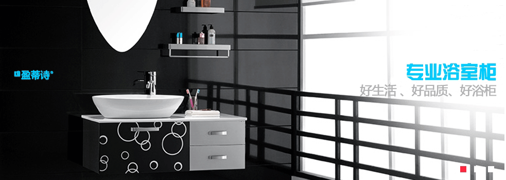

400-191-0099

关于我们/Honor

上海百纳塑业有限公司系PTFE / FEP / PFA制品的专业生产厂家，始建于 1995 年 8 月，属上海高科技改造企业。公司坐落于上海市沿江开发区，占地两万余平 方米，现有员工200余人，其中技术人员30余人。多年来，百纳塑业务实守信、精益求精，立足于氟硅系列高科技制品的研发、生产和销售，是国内最大的铁氟龙（PTFE）、氟硅粘胶系列产品制造基地之一。公司具有自主进出口权，产品远销欧美、中东以及东南亚等国家和地区。
用户登录/User
产品展示/Products more>>

常见问题/Helpmore>>
行业资讯/News more>>
- 注塑机温升过高 五大危害全面分析
 注塑机是塑料加工业中使用量最大的加工机械，不仅有大量的产品可用注塑机直接生产，而且还是组成注拉吹工艺的关键设备。在注塑过程中，许多企业都会发现 注塑机有温升过高的现象，而这样其实对注塑机械设备是有很大伤害的，具体会带来……
注塑机是塑料加工业中使用量最大的加工机械，不仅有大量的产品可用注塑机直接生产，而且还是组成注拉吹工艺的关键设备。在注塑过程中，许多企业都会发现 注塑机有温升过高的现象，而这样其实对注塑机械设备是有很大伤害的，具体会带来……
友情链接/Link
安徽国风塑业股份有限公司 山东德泰塑业有限公司 江苏羽佳塑业有限公司 光华塑业有限公司- Copyright @ 2015-2018 上海百纳塑业有限公司 版权所有 Power by BaiNa
- 地址：上海市杨浦区控江路1865号
- 电话：400-191-0099